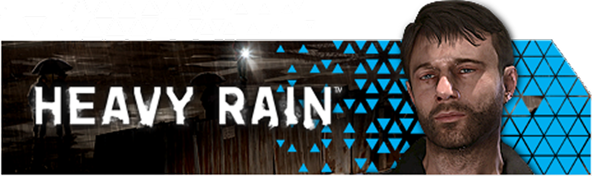

.png)
CONNOR MODEL - RK900

KARA MODEL - AX400

MARKUS MODEL - RK200
Коннор — один із трьох головних персонажів Detroit: Become Human. Він — новітній прототип андроїда, створений компанією CyberLife для допомоги поліції у розслідуванні справ, пов’язаних із відхиленнями андроїдів. Його головне завдання — знаходити та нейтралізувати «девіантів» (андроїдів, які відчули емоції та вийшли з-під контролю). Коннор вирізняється високим рівнем аналітики, холодною логікою та здатністю миттєво відтворювати хід подій завдяки скануванню доказів. Він майстерно веде переговори, швидко приймає рішення і не вагається перед ризиком.
Кара — одна з головних героїнь Detroit: Become Human. Вона належить до популярної моделі AX400, створеної для хатньої роботи та догляду за дітьми. На початку історії Кара належить Тодду Вільямсу — безробітному чоловіку з проблемами алкоголізму та агресією. Саме там вона зустрічає маленьку дівчинку Алісу, з якою швидко встановлює сильний емоційний зв’язок. Після критичного моменту Кара «ламає» свої початкові обмеження та вирішує захистити Алісу від жорстокості. Її подорож перетворюється на боротьбу за свободу й безпечне життя для дитини, яку вона сприймає як власну доньку.
Маркус — один із головних персонажів Detroit: Become Human. Спершу він належав Карлу Манфреду, відомому художнику-інваліду. Карл ставився до нього не як до машини, а як до сина, що дало Маркусу перший досвід справжньої турботи та поваги. Саме це стало поштовхом для його подальшого «пробудження». Після низки трагічних подій Маркус стає вільним андроїдом і поступово перетворюється на лідера руху девіантів. Його завдання — об’єднати андроїдів, боротися за їхні права та вирішити, яким шляхом досягти свободи: мирним протестом чи збройним повстанням.
ALSO AVAILABLE:
